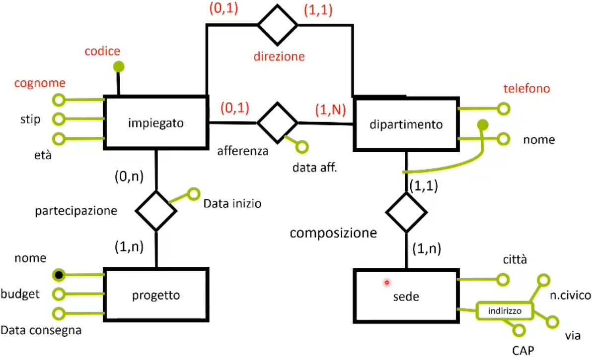
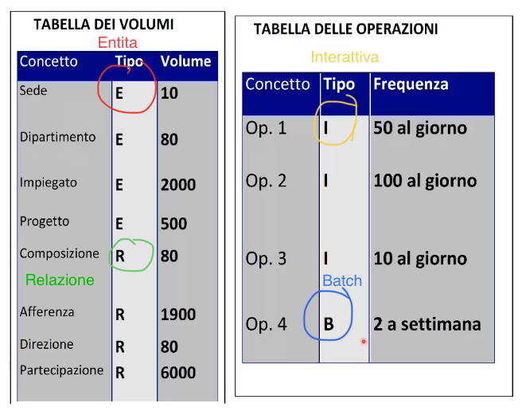
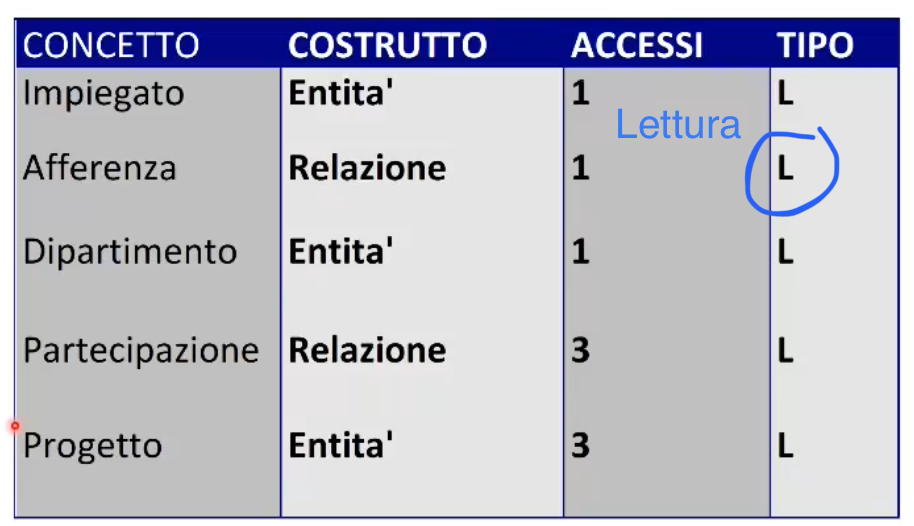
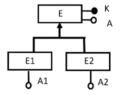
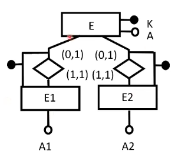
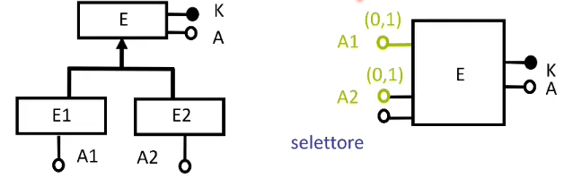
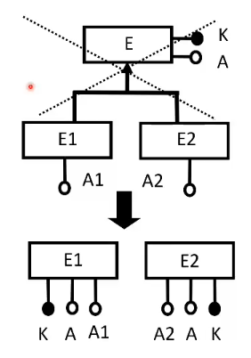

La progettazione logica si divide in:
Immaginiamo di avere il seguente schema:
Le operazioni di cui vogliamo analizzare il costo sono:
Per stimare il costo di ogni singola operazione, è essenziale avere due tabelle di stima. La prima è la tabella dei volumi, mentre la seconda è la tabella delle operazioni. Entrambe le tabelle faranno quindi parte della documentazione della base di dati.
Avendo a disposizione questi dati è possibile stimare i costi di ogni operazione.
Vediamo come fare correttamente la stima del costo dell'operazione 2.
Analisi della richiesta
Trova i dati di un impiegato, del dipartimento nel quale lavora e dei progetti in cui è coinvolto
Tavola degli accessi
Per fare questa operazione dobbiamo:
Tutto viene riassunto in una tavola degli accessi.
Il costo totale dell'operazione è dato dalla somma di tutti gli accessi, che in questo caso è 9.
Ricordiamoci anche che essendo le operazioni di scrittura più onerose di quelle di scrittura 1S=2L.
Una volta analizzato il costo di tutte le operazioni, procediamo con la ristrutturazione. Questo processo si divide in:
Analisi delle ridondanze
In generale l'analisi di tutti quegli attributi derivabili da altre entità o relazioni.
Consideriamo l'esempio Città-Persona per l'anagrafica di una regione:
Come è possibile vedere nello schema E-R il numero di abitanti rappresenta una ridondanza, infatti può essere preso sia da città che contanto gli N Persona della relazione Residenza. In tutti i casi in cui c'è ridondanza il problema è sempre uno: Eliminare o lasciare? Entrambe le scelte presentano vantaggi e svantaggi. Per aiutarci nella scelta viene fatto, li dove è presente ridondanza una valutazione sull'indice di prestazione.
Valutiamo l'indice di prestazione per l'attributo Numero abitanti per ogni singola operazione:
Considerando gli accessi in scrittura 1S=2L abbiamo un numero totale di accessi per entrambe le operazioni di 3500.
Considerando gli accessi in scrittura 1S=2L abbiamo un numero totale di accessi per entrambe le operazioni di 12000. Quindi 8500 in più rispetto al caso di ridondanza.
La versione con ridondanza, seppur occupa 1 kilobyte (considerando 4 byte per ogni entità Città per il numero abitanti) in più rispetto a quella senza, è conveniente da attuare rispetto quello senza.
In questo caso conviene lasciare la ridondanza.
Ovviamente, come verificato per l'esempio, la versione con ridondanza occuperà sempre spazio in più.
Eliminazione delle gerarchie
Il modello relazionale non implementa le gerarchie, introdotte invece nello schema E-R, allora bisogna eliminarle; questo è possibile tramite tre strategie.
Mantenimento delle entità
Tutte le entità figlie vengono mantenute e sostituiamo alle gerarchie delle associazioni. Ogni entità viene identificata dalla relazione.
Collasso verso l'alto
Si rimuovono le entità figlie riunendo tutti gli attributi di queste nell'entità padre.
Collasso verso il basso
Si elimina l'entità padre trasferendo tutti i suoi attributi nelle entità figlie. Si tratta di una strategia molto utile in tutte quelle situazioni in cui le entità figlie hanno molti più attributi dell'entità padre. Questa strategia si sconsiglia sempre nel caso di gerarchie non totali perchè andremo ad aggiungere ridondanze nei dati
Partizionamento/Accoppamento di Entità e Associazioni
Scelta degli identificatori principali
Viene fatto riferimento ad un modello logico (nel nostro caso quello relazionale) e può includere ulteriore ottimizzazione sul modello logico (es.normalizzazione per il modello logico relazionale).